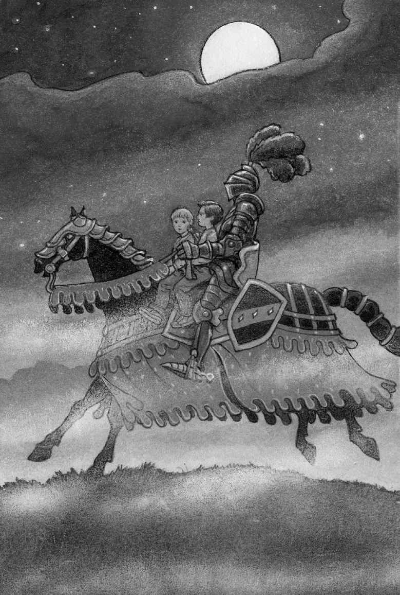

Jack froze.
“It’s him,” Annie whispered.
The knight held out his gloved hand.
“Come on, Jack,” Annie said.
“Where are you going?” said Jack.
“He wants to help us,” said Annie.
“How do you know?” said Jack.
“I can just tell,” said Annie.
Annie stepped toward the horse. The knight dismounted.
The knight picked Annie up and put her on the back of his horse.
“Come on, Jack,” Annie called.
Jack moved slowly toward the knight. The knight lifted him up, too, and put him on the horse, behind Annie.
The knight then got on behind them. He slapped the reins.
The black horse cantered beside the moonlit water of the moat.
Jack rocked back and forth in the saddle. The wind blew his hair. He felt very brave and very powerful.
He felt as if he could ride forever on this horse, with this mysterious knight, over the ocean, over the world, over the moon.
A hawk shrieked in the darkness.
“There’s the tree house,” said Annie. She pointed toward a grove of trees.

The knight guided the horse toward the trees.
“See. There it is,” Annie said, pointing to the ladder.
The knight brought his horse to a stop. He dismounted and helped Annie and Jack down.
“Thank you, sir,” Annie said. She bowed.
“Thank you,” Jack said. He bowed, too.
The knight got back on his horse. He raised his gloved hand. Then he slapped the reins and rode off through the mist.
Annie started up the tall ladder, and Jack followed. They climbed into the dark tree house and looked out the window.
The knight was riding toward the outer wall of the castle. They saw him go through the outer gate.
Clouds started to cover the moon again. For a brief moment, Jack thought he saw the knight’s armor gleaming on the top of a hill beyond the castle.
The clouds covered the moon completely. A black mist swallowed the land.
“He’s gone,” whispered Annie.
Jack shivered in his wet clothes as he kept staring at the blackness.
“I’m cold,” said Annie. “Where’s the Pennsylvania book?”
Jack heard Annie fumbling in the darkness. He kept looking out the window.
“I think this is it,” said Annie. “I feel a silk bookmark.”
Jack was only half-listening. He was hoping to see the knight’s armor gleam again in the distance.
“Okay. I’m going to use this,” said Annie. “Because I think it’s the right one. Here goes. Okay. I’m pointing. I’m going to make a wish. I wish we could go to Frog Creek!”
Jack heard the wind begin to blow softly.
“I hope I pointed to the right picture in the right book,” said Annie.
“What?” Jack looked back at her. “Right picture? Right book?”
The tree house began to rock. The wind got louder and louder.
“I hope it wasn’t the dinosaur book!” said Annie.
“Stop!” Jack shouted at the tree house.
Too late.
The tree house started to spin.
It spun faster and faster!
Then everything was still.
Absolutely still.